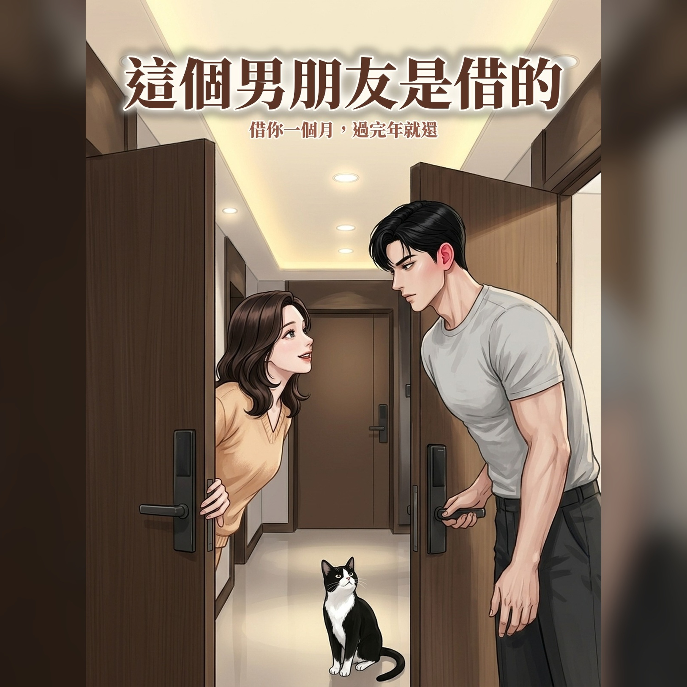

這個男朋友是借的｜有聲書
《這個男朋友是借的》有聲書。凌晨十二點五十分，資深婚企許若心被鎖在門外，對門搬來一年半只點過頭的工程師陳廷川和一隻賓士貓「肉圓」成了救兵。為了應付媽媽催婚，「借男朋友一個月」的交易就這樣開始——從頭甜到尾的台灣都會戀愛故事。
RSS：https://ntcloudy.github.io/borrowed-podcast/feed.xml
- 這個男朋友是借的｜第二十八章 分株
- 這個男朋友是借的｜第二十九章 清明
- 這個男朋友是借的｜第三十章 小宇的週末
- 這個男朋友是借的｜第三十一章 伴郎的功課
- 這個男朋友是借的｜第三十二章 領結與緞帶
- 這個男朋友是借的｜第三十三章 停電的十一樓
- 這個男朋友是借的｜第三十四章 備用鑰匙的重量
- 這個男朋友是借的｜第三十五章 電梯裡的二十分鐘
- 這個男朋友是借的｜第三十六章 婚禮前夜的逃跑
- 這個男朋友是借的｜第三十七章 迎娶闖關
- 這個男朋友是借的｜第三十八章 口袋裡的餐包
- 這個男朋友是借的｜第三十九章 紅毯兩端
- 這個男朋友是借的｜第四十章 捧花與排隊的人
- 這個男朋友是借的｜第四十一章 捧花的新家
- 這個男朋友是借的｜第四十二章 兩扇門中間的地墊
- 這個男朋友是借的｜第四十三章 訪客證上的關係
- 這個男朋友是借的｜第四十四章 下班後的界線與液壓連桿
- 這個男朋友是借的｜第四十五章 草坪上的救場與專屬副駕
- 這個男朋友是借的｜第四十六章 建築師的筆記與陽台初花
- 這個男朋友是借的｜第四十七章 母親節前夕的雙媽連線
- 這個男朋友是借的｜第四十八章 霧峰桂花樹下的全家福
- 這個男朋友是借的｜第四十九章 三十四度的午後與書房白板
- 這個男朋友是借的｜第五十章 五朵全開的花冠與手腕上的新錶
- 這個男朋友是借的｜第五十一章 園區家庭日的摩天輪與優雅退場
- 這個男朋友是借的｜第五十二章 端午的竹葉香與二十年前的筆記本